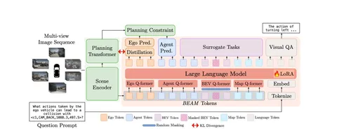

Сегодня разберём статью о попытке дистиллировать VLM (а именно LLaVA-1.5-7b) в планнер — в теории это улучшает понимание сцен и подчищает длинные хвосты.
Ход мысли интересный:
Для реализации авторы предлагают использовать предобученную для вождения end-to-end модель с промежуточными векторными представлениями. VLM, в свою очередь, умеет отвечать на вопросы, и у неё тоже есть выходные эмбеды — обе модели доучивают параллельно, накладывая ограничение: их векторные пространства должны быть похожи по KL.
Но если обучать VLM только предсказывать движение, она схлопнется и утратит свои обширные знания о мире. Чтобы избежать этого, обучение обогащают несколькими типами задач. Во-первых, реконструкцией маскированных токенов-агентов как в BERT. Во-вторых, ответами на текстовые вопросы. Например, учат отвечать, какая на улице погода или что будет делать агент перед нашим ТС. Чем лучше понимание сцены, тем выразительнее выход модели — векторное пространство.
Чтобы это всё работало, авторы адаптируют:
Основную часть LLaVa авторы тренируют с помощью LORA: не трогают все веса, а только доучивают небольшие поправки к ним.
Этот подход напоминает известный способ быстрой разработки мультимодальных моделей, когда векторные представления претренированной LLM и картиночного энкодера файнтюнят на задачах в духе visual QA.
Попытку авторов дистиллировать VLM в планнер можно считать удачной:
Разбор подготовил
404 driver not found
